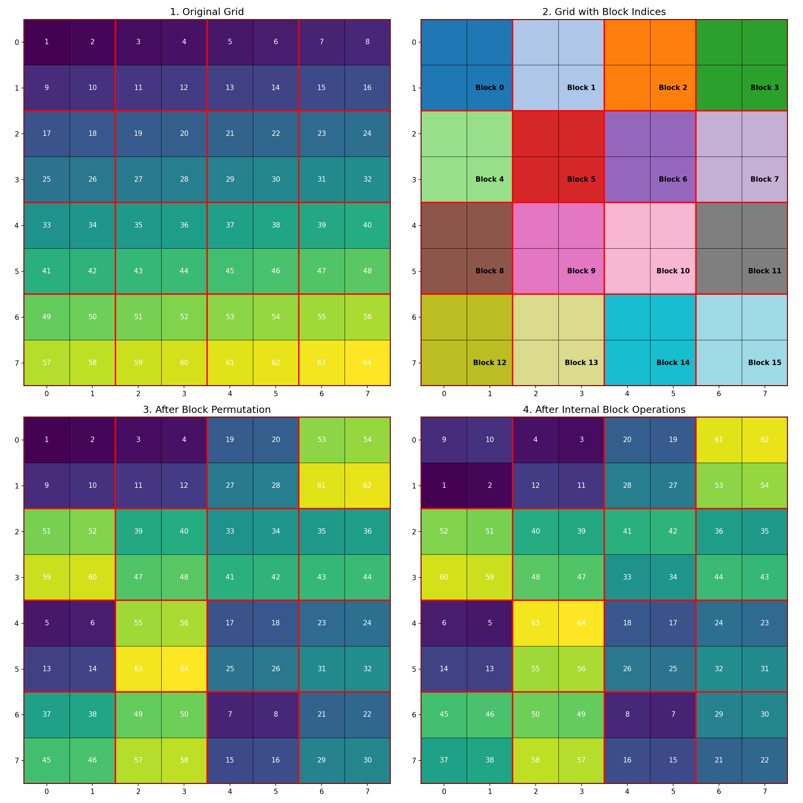
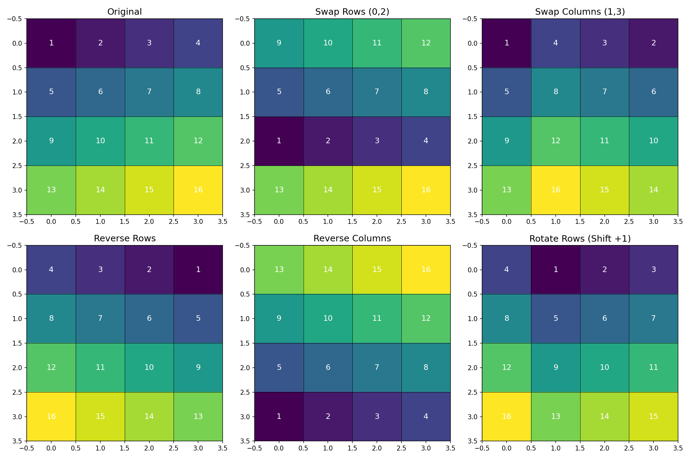

Transposition with Chaotic Tinkerbell Maps
A Secure Data Transformation Technique
September 2025
What is Transposition?
- A technique that rearranges data elements
- Preserves all original data values
- Changes only the positions of elements
- Fundamental operation in cryptography
- Can be applied to any data represented as a grid
Chaos Theory and Cryptography
- Chaotic systems exhibit:
- Sensitivity to initial conditions
- Topological mixing
- Dense periodic orbits
- Ideal properties for cryptographic applications
- Unpredictable yet deterministic behavior
The Tinkerbell Map
A discrete-time dynamical system defined by:
xn+1 = xn² - yn² + axn + byn
yn+1 = 2xnyn + cxn + dyn
Where typical parameter values are:
a = 0.9, b = -0.6, c = 2.0, d = 0.5
Different initial values produce different trajectories
Chaotic Properties of Tinkerbell Map
- Sensitivity to initial conditions: Small changes in starting points lead to vastly different trajectories
- Deterministic: Same input always produces same output
- Ergodicity: Trajectories eventually visit all regions of state space
- Unpredictability: Long-term behavior is practically impossible to predict
Transposition Algorithm Overview
- Arrange data in a grid structure
- Divide grid into blocks
- Generate permutation sequence using chaotic map
- Shuffle blocks according to permutation
- Apply additional operations within each block

Block Operations
After block permutation, additional operations are applied within each block:

These operations further increase security and diffusion properties
Implementation Details
// Key components of the implementation
void applyTransposition(uint8_t *data, const GridSpec &grid,
const uint8_t key[8], PermuteMode mode) {
// 1. Expand 8-byte key to 16 bytes
uint8_t key16[16];
// Key expansion logic...
// 2. Call enhanced implementation
applyTranspositionEnhanced(data, grid, key16, mode);
}
The implementation ensures:
- Deterministic behavior (same key → same mapping)
- Perfect invertibility (Forward → Inverse restores original)
- Efficient operation on blocks of varying sizes
Deterministic PRNG
struct DeterministicPRNG {
uint64_t state;
explicit DeterministicPRNG(const uint8_t key16[16]) {
uint64_t s0 = load64be(key16);
uint64_t s1 = load64be(key16 + 8);
state = s0 ^ (s1 + 0x9E3779B97F4A7C15ull);
if (state == 0) state = 0xCAFEBABEDEADBEEFull;
}
uint64_t next64() {
uint64_t z = (state += 0x9E3779B97F4A7C15ull);
z = (z ^ (z >> 30)) * 0xBF58476D1CE4E5B9ull;
z = (z ^ (z >> 27)) * 0x94D049BB133111EBull;
return z ^ (z >> 31);
}
// Additional methods...
};
The implementation uses splitmix64-based PRNG for platform stability
Chaotic Permutation Generation
// Fisher-Yates shuffle using DeterministicPRNG
static void fy_shuffle_uint16(uint16_t *arr, size_t n, DeterministicPRNG &prng) {
if (n <= 1) return;
for (size_t i = n - 1; i > 0; --i) {
uint32_t rnd32 = prng.next32();
size_t j = (size_t)(rnd32 % (uint32_t)(i + 1));
uint16_t tmp = arr[i];
arr[i] = arr[j];
arr[j] = tmp;
}
}
The Fisher-Yates shuffle algorithm ensures:
- Uniform distribution of permutations
- Deterministic output based on PRNG seed
- Efficient O(n) complexity
Applications
Cryptography
- Data encryption
- Secure communication
- Digital signatures
- Authentication protocols
Other Applications
- Image scrambling
- Secure data storage
- Multimedia protection
- Watermarking
- Steganography
Security Analysis
- Key Space: 64-bit key expanded to 128 bits
- Diffusion: Changes in one block affect multiple areas
- Confusion: Complex relationship between key and output
- Statistical Properties: Output appears random
- Resistance to Attacks:
- Brute force attacks
- Statistical analysis
- Known-plaintext attacks
Performance Considerations
Advantages
- Linear time complexity O(n)
- Minimal memory overhead
- Parallelizable operations
- Platform-independent results
Optimizations
- Block size adaptation
- Group-based permutation
- Memory-efficient operations
- Deterministic PRNG selection
Future Directions
- Integration with other chaotic maps
- Hardware acceleration
- Quantum-resistant variants
- Application to higher-dimensional data
- Dynamic key scheduling
- Adaptive block sizing based on data characteristics
Conclusion
- Transposition with chaotic Tinkerbell maps provides:
- Strong security properties
- Efficient implementation
- Deterministic behavior
- Perfect invertibility
- The combination of block permutation and internal operations creates a robust transformation
- Chaotic properties ensure high sensitivity to key changes
- Wide range of applications in security and data protection
Questions?
Thank you for your attention!